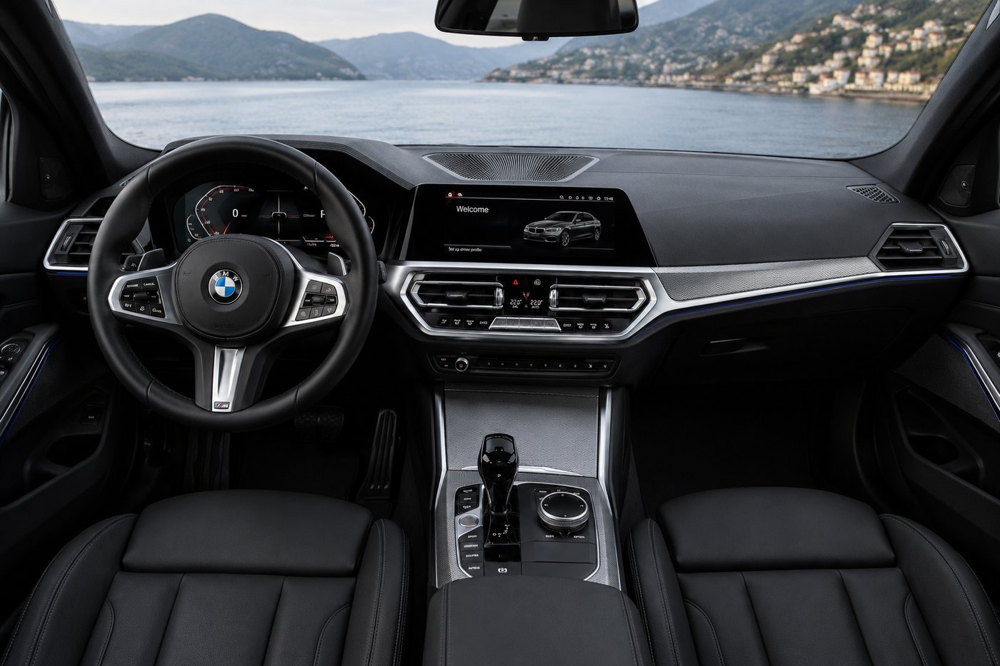

A used BMW 330i and a new one can share a generation code without offering the same cabin, equipment or buying decision. The G20 badge describes a family of cars, not a specification sheet. That distinction matters more than whether the trunk lid carries an M badge.
BMW introduced this generation for a March 2019 market launch. Its launch material showed a cabin with separate instruments and a central display. Today's U.S. 3 Series uses BMW's Curved Display. A photograph of an early G20 therefore cannot establish what a current showroom car looks like inside.
Start with the car's identity
The U.S. 2026 330i is listed with a turbocharged four-cylinder, 255 horsepower and rear-wheel drive; 330i xDrive adds all-wheel drive. BMW quotes 5.6 seconds from zero to 60 mph for the rear-drive car. That is a manufacturer figure, not an AutoGlob measurement.
Those numbers are useful for identifying the contemporary model. They should not be pasted onto every earlier G20, an overseas specification or a car carrying similar bodywork. A seller's photograph tells you what is visible. The VIN, build information and service records answer different questions.
Before comparing listings, establish model year, market, drivetrain and installed options. Then check the actual vehicle against that record. An attractive wheel, bumper or steering wheel may be factory equipment, a later retrofit or simply an accessory. Appearance alone does not settle the question.

Choose equipment around your roads
A specification that sounds desirable on paper can introduce a cost you notice every week. Larger wheels change the tire bill and the amount of sidewall available to absorb a sharp edge. Suspension choices deserve a drive on the roads you use, rather than an assumption that the most sporting package must be the best.
Try the cabin's everyday tasks while parked: adjust the temperature, pair your phone, set a destination and locate the controls you expect to use without looking away for long. Compare the actual early and later interfaces. A preference for one layout is a legitimate buying reason; it does not require declaring the other unusable.
The used-car decision is about condition
For a used 330i, a specialist inspection and a coherent maintenance history are more valuable than a sweeping claim that the entire generation is reliable or troublesome. Examine tires as a matched set, look for evidence of repairs and ask which servicing is due next. Separate consumables from unresolved faults when building the budget.
For a new example, compare the complete configured price and finance terms. The lowest monthly payment can hide a longer commitment or a different deposit. The right 330i is the one whose identity, condition and running costs fit your use. The badge is only the beginning of that assessment.
Sources & image references
Researched analysis, updated October 13, 2026. Manufacturer figures and catalog accounts are identified in the article.
Keep exploring